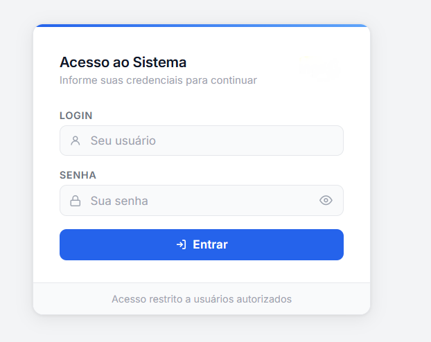
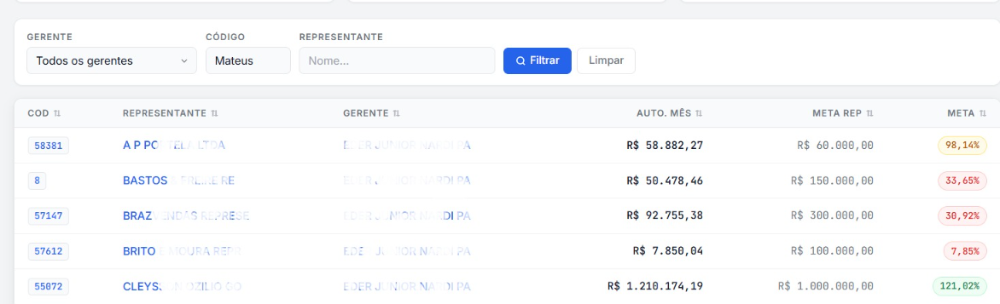
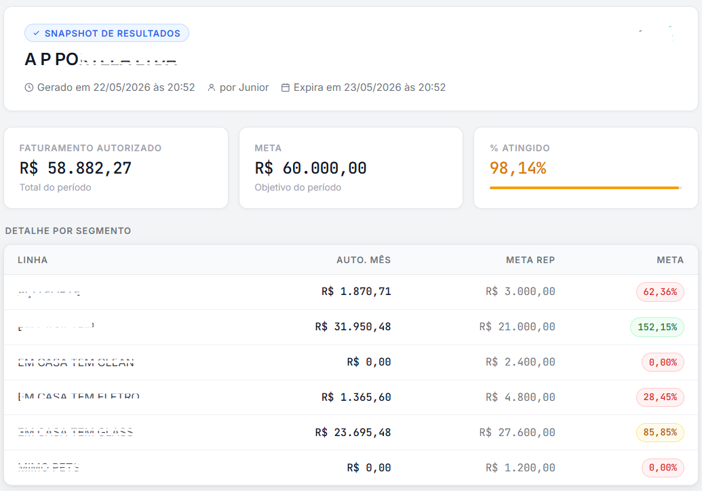

Cada gerente acessa apenas sua carteira de representantes, respeitando a ética e a privacidade comercial da operação.
Sistema comercial · Metas · Performance
A carteira comercial na mão do gerente.
Sistema desenvolvido para que gerentes acompanhem, em tempo real, o desempenho de seus representantes em relação às metas, enquanto a diretoria consegue visualizar todos os gerentes, representantes e resultados consolidados.
Gerente
visualiza sua carteira
Diretoria
visualiza todos os times
Representante
recebe link individual

COMERCIAL.ONLINE
metas atualizadas a cada login
Acesso
por perfil de usuário
Tempo real
dados sempre atualizados
Para empresas que precisam acompanhar metas comerciais sem depender de planilhas, relatórios manuais, notebook aberto ou consultas em sistemas complexos.
Metas
Gerentes
Representantes
Diretoria
Tempo real
A diretoria acessa uma visão consolidada com todos os gerentes, representantes e resultados da operação.
Os valores são atualizados a cada login, garantindo que a informação exibida esteja sempre correta e atual.
O desafio
Acompanhamento comercial dependia de relatórios, consultas e esforço manual.
Antes do sistema, o acompanhamento de metas e desempenho comercial dependia de acessos a sistemas, abertura de relatórios, análise manual de números e troca de informações entre gestores, representantes e diretoria.
Essa rotina dificultava a visibilidade rápida dos resultados, principalmente para quem precisava acompanhar a carteira fora do escritório, em reunião, em viagem ou diretamente pelo celular.
Além disso, existia a necessidade de controlar o acesso de forma ética: cada gerente deveria visualizar apenas seus representantes, enquanto a diretoria precisava de uma visão completa da operação.
A solução
Um sistema simples, rápido e acessível para acompanhar a meta comercial.
O sistema foi desenvolvido para entregar uma visão prática do desempenho comercial, permitindo que cada gerente visualize seus representantes, metas, resultados atuais e evolução sem precisar gerar relatórios ou acessar ferramentas complexas.
A diretoria, com seu próprio login, consegue acessar uma visão ampla da operação, acompanhando todos os gerentes e representantes. Já os representantes podem receber um link individual com seus próprios números atualizados.
Regras do sistema
- Gerente acessa apenas sua carteira de representantes.
- Diretoria visualiza todos os gerentes e representantes.
- Representante pode receber link com seus números atuais.
- Valores atualizados automaticamente a cada login.
- Relatório disponível sem abrir notebook ou gerar arquivo.
- Consulta rápida, prática e pensada para uso no dia a dia.
Experiência do sistema
Um sistema pensado para ser consultado rápido, inclusive pelo celular.
A proposta foi colocar a informação comercial mais importante na mão do gestor: sem precisar abrir notebook, entrar em vários sistemas ou montar relatórios manuais.
01 · Visão de meta
Meta geral, desempenho por gerente ou resultado por representante.
O sistema permite acompanhar o desempenho comercial de forma segmentada, mostrando a evolução conforme o perfil de acesso. O gerente vê sua carteira, enquanto a diretoria consegue navegar por toda a estrutura comercial.
02 · Controle por perfil
Cada usuário acessa exatamente o que deve acessar.
Por questão de ética e organização comercial, cada gerente possui acesso apenas à sua carteira de representantes. A diretoria possui uma visão consolidada, podendo analisar todos os gerentes e representantes.

03 · Link para representante
O representante também pode receber seus números atuais.
O gerente pode compartilhar um link com o representante, permitindo que ele consulte seus próprios números atualizados, sem depender de envio manual de relatórios ou prints.

Controle de acesso
Carteira própria
Visualiza apenas os representantes sob sua responsabilidade, acompanhando metas, evolução e desempenho individual.
Visão total
Acessa todos os gerentes, representantes e resultados, com leitura consolidada da performance comercial.
Link individual
Recebe uma visão com seus números atuais, facilitando acompanhamento sem depender de relatórios enviados manualmente.
Antes e depois
- Necessidade de abrir notebook para consultar resultados.
- Dependência de relatórios gerados manualmente.
- Informações comerciais espalhadas em diferentes fontes.
- Dificuldade para enviar números atualizados ao representante.
- Gestores com menos agilidade para acompanhar sua carteira.
- Consulta rápida pelo celular ou navegador.
- Dados atualizados automaticamente a cada login.
- Visão por gerente, representante ou diretoria.
- Link individual para compartilhar números com representantes.
- Mais praticidade para acompanhar metas e cobrar resultados.
Resultado
A gestão comercial ganhou mobilidade, controle e informação atualizada.
O sistema reduziu a necessidade de gerar relatórios, acessar sistemas complexos ou depender de arquivos manuais para acompanhar o desempenho comercial.
Com a carteira na mão, gerentes conseguem acompanhar sua equipe com mais agilidade, representantes podem consultar seus próprios números e a diretoria mantém uma visão ampla e consolidada da operação.
Consulta rápida sem precisar abrir relatórios ou sistemas complexos.
Acesso separado por perfil, respeitando a estrutura comercial.
Representantes podem acompanhar seus próprios números atualizados.
Dados carregados a cada login, sempre com valor atualizado.
Projeto parecido?
Sua equipe comercial ainda depende de relatórios manuais para acompanhar metas?
Um sistema sob medida pode colocar indicadores, metas e resultados na mão de quem precisa agir rápido.